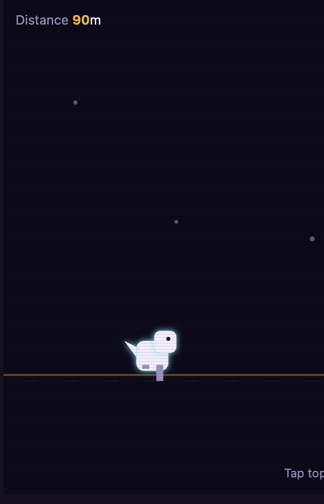
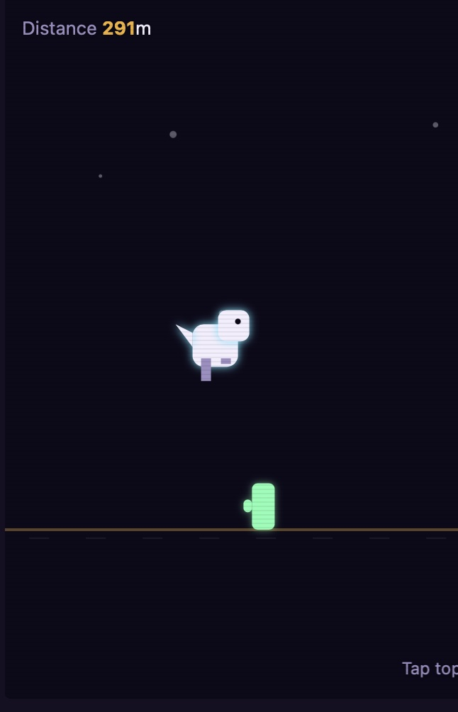

Free · No download · Play in browser
Play Neon Dino online for free — jump over cacti, duck under flyers, and run as far as you can before you crash.
How to play Neon Dino
Neon Dino is a Dino-style endless runner: your dino runs automatically, and it's up to you to dodge whatever gets in the way. Jump over ground obstacles — cacti, sometimes clustered two or three together — by tapping the top half of the screen, clicking, or pressing Space. Duck under low-flying obstacles by tapping the bottom half of the screen or holding Down. Time each move well and you'll clear everything in your path; mistime one and it's game over. There's no finish line — the goal is simply to run as far as possible and beat your high score. The longer you survive, the faster the run gets, so the real skill is keeping your reflexes sharp as the pace ramps up.
Neon Dino screenshots


Controls
| Action | Desktop | Mobile |
|---|---|---|
| Jump | Click, Space, or Up Arrow (top half of screen) | Tap the top half of the screen |
| Duck | Hold Down Arrow (or click/hold bottom half) | Tap and hold the bottom half of the screen |
| Start / Retry | Click the on-screen button | Tap the on-screen button |
Tips & strategies
- Jump a beat later than feels natural. Jumping the instant you see a cactus often means landing too early — waiting a fraction longer clears it more reliably.
- Watch for clustered cacti. Not every obstacle is the same width — clusters of two or three need a slightly earlier jump to clear the whole group.
- Duck early, not late. Flying obstacles come in at head height — start ducking a moment before they reach you rather than reacting at the last second.
- Expect the pace to climb. Speed increases the further you run, so build a consistent rhythm early rather than relying on reaction time alone once things speed up.
- Every run resets clean. Speed and difficulty always restart from the same baseline, so a bad run is never held against your next attempt.
Game features at a glance
- Simple jump-and-duck controls — click, tap, or use the keyboard
- Ground cacti (single and multi-block clusters) plus low-flying obstacles
- Endless, side-scrolling obstacle course with no fixed end point
- Distance-based scoring with your high score saved locally
- Speed and difficulty that increase the farther you run
- Simple dino-style running and ducking animation with a glowing neon look
- Runs entirely in-browser, no plugins or installs
About this game
Neon Dino is an original PlayItNow build, made in-house for instant browser play — no plugins, no downloads, nothing to install. If you've played the offline dinosaur game built into Chrome, or you just enjoy dinosaur games and endless runner games in general, Neon Dino runs on that same jump-and-duck, obstacle-dodging formula: easy to learn in seconds, but genuinely testing your reflexes and timing once the speed picks up. It's a fast-paced sprint through a glowing, prehistoric-style obstacle course, built to match the neon-arcade look used across the rest of the site.
Neon Dino — FAQ
How do I play Neon Dino?
Your dino runs automatically — jump over cacti by tapping the top of the screen, clicking, or pressing Space, and duck under flying obstacles by tapping the bottom of the screen or holding Down. Time each move to clear what's ahead.
Is my high score saved?
Yes — your best distance is saved locally in your browser, so it'll still be there next time you visit on the same device and browser.
Does the game get harder the longer I play?
Yes — your run speed gradually increases the farther you get, so obstacles come at you faster the longer you survive.
Does it work on mobile?
Yes — tap the top half of the screen to jump and the bottom half to duck, the same as clicking or using the keyboard on desktop.
Looking for something else? Browse all games on PlayItNow.